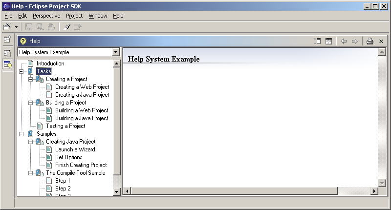

| Note: The help system is still under development and can be expected to change somewhat before reaching stability. It is being made available at this stage to solicit feedback from early adopters, on the understanding that the details of the contribution mechanisms might change in breaking ways. |
Description: For registering an online help contribution for an individual plug-in.
Each plug-in that contributes help files should in general do the following:
<!ELEMENT toc EMPTY>
<!ATTLIST toc file CDATA #REQUIRED>
<!ATTLIST toc primary (true | false) "false">
<!ELEMENT toc (topic | anchor | link)* >
<!ATTLIST toc link_to CDATA #IMPLIED >
<!ATTLIST toc label CDATA #REQUIRED >
<!ELEMENT topic (topic | anchor | link )*
>
<!ATTLIST topic label CDATA #REQUIRED >
<!ATTLIST topic href CDATA #IMPLIED >
<!ELEMENT anchor EMPTY >
<!ATTLIST anchor id ID #REQUIRED >
<!ELEMENT link EMPTY >
<!ATTLIST link toc CDATA #REQUIRED >
In general, a plug-in that needs to provide online help will define its own TOC files. In the end, the help system is configured to be launched as some actions, and the path of the TOC file can be used to do so.
The topic element
All help topic element are contributed as part of the toc container element. They can have a hierarchical structure, or can be listed as a flat list.
The topic element is the workhorse of structure of Table of Contents. There are two typical uses for the topic element:
1. To provide a link to a documentation file - usually an HTML
file.
2. To act as a container for other toc, either in the same manifest
or another.
1. Topics as links
The simplest use of a topic is as a link to a documentation file.
<topic label="Some concept file" href="concepts/some_file.html" />
The href attribute is relative to the plug-in that the manifest file belongs to. If you need to access a file in another plug-in, you can use the syntax
<topic label="topic in another plug-in" href="../other.plugin.id/concepts/some_other_file.html" />
2. Topics as containers
The next most common use of a topic is to use it as a container for
other toc. The container topic itself can always refer to a particular
file as well.
<topic label="Integrated Development Environment" href="concepts/ciover.htm"
>
<topic label="Starting the IDE" href="concepts/blah.htm"
/>
...
</topic>
The link element
The link element allows to link Table of Contents defined in another toc file. All the topics from the toc file specified in the toc attribute will appear in the table of contents as if they were defined directly in place of the link element. To include toc from api.xml file you could write
<topic label="References" >
...
<link toc="api.xml" />
...
</topic>
The anchor element
The anchor element defines a point that will allow linking other toc files to this navigation, and extending it, without using the link element and referencing other toc files from here. To allow inserting Table of Contents with more topics after the "ZZZ" document you would define an anchor as follows:
...
<topic label="zzz" href="zzz.html" />
<anchor id="moreapi" />
...
The toc element
The toc element is a Table of Contents that groups topics and other elements defined in this file. The label identifies the table of contents to the user, when it is displayed to the user. The optional link_to attribute allows for linking toc from this file into another toc file being higher in the navigation hierarchy. The value of the link_to attribute must specify an anchor in another toc file. To link toc from myapi.xml to a api.xml file, specified in another plugin you would use the syntax
<toc link_to="../anotherPlugin/api.xml#moreapi" label="My Tool
API"/>
...
<toc />
where # character separates toc file name from the anchor identifier.
Examples:
The following is an example of using the toc extension point. Assume the following is for a plug-in with id named "org.eclipse.help.examples.ex1". (The example is intended as a general sample, and it should be noted that the same documentation hierarchy, resulting from all the following toc files, could also be created with different combination of another toc files.)
(in file plugin.xml)
<extension point="org.eclipse.help.toc">
<toc file="maindocs.xml" type="toc" />
<toc file="task.xml"/>
<toc file="sample.xml"/>
</extension>
(in file maindocs.xml)
<toc label="Help System Example">
<topic label="Introduction" href="intro.html"/>
<topic label="Tasks">
<topic label="Creating a Project" href="tasks/task1.html">
<topic label="Creating a Web Project" href="tasks/task11.html"/>
<topic label="Creating a Java Project" href="tasks/task12.html"/>
</topic>
<link toc="task.xml" />
<topic label="Testing a Project" href="tasks/taskn.html"/>
</topic>
<topic label="Samples">
<topic label="Creating Java Project" href="samples/sample1.html">
<topic label="Launch a Wizard" href="samples/sample11.html"/>
<topic label="Set Options" href="samples/sample12.html"/>
<topic label="Finish Creating Project" href="samples/sample13.html"/>
</topic>
<anchor id="samples" />
</topic>
</toc>
(in file tasks.xml)
<toc label="Building a Project">
<topic label="Building a Project" href="build/building.html">
<topic label="Building a Web Project" href="build/web.html"/>
<topic label="Building a Java Project" href="build/java.html"/>
</topic>
</toc>
(in file samples.xml)
<toc link_to="maindocs.xml#samples" label="Using The Compile Tool">
<topic label="The Compile Tool Sample" href="compilesample/example.html">
<topic label="Step 1" href="compilesample/step1.html"/>
<topic label="Step 2" href="compilesample/step2.html"/>
<topic label="Step 3" href="compilesample/step3.html"/>
<topic label="Step 4" href="compilesample/step4.html"/>
</topic>
</toc>
Here is the resulting documentation hierarchy in the Eclipse Workbench
:

The documentation contained in doc.zip can be localized by creating
a doc.zip file with translated version of documents, and placing doc.zip
in
nl/<language>/<country> or nl/<language> directory. The help
system will look for the files under this directories before defaulting
to plugin directory.
API Information: No code
is required to use this extension point. All that is needed is to supply
the appropriate manifest files mentioned in the plugin.xml file.
Supplied Implementation: The default implementation of the help system UI supplied with the Eclipse platform fully supports the toc extension point.